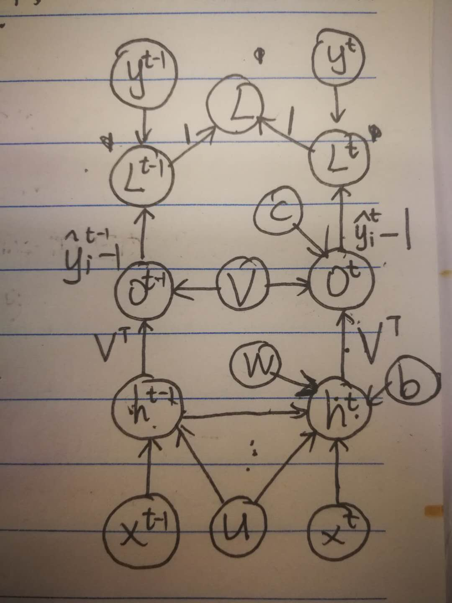

计算循环神经网络的梯度是容易的。
我们可以简单地将\sec?中的推广反向传播算法应用于展开的计算图，而不需要特殊化的算法。
由反向传播计算得到的梯度，并结合任何通用的基于梯度的技术就可以训练RNN。
为了获得BPTT算法行为的一些直观理解，我们举例说明如何通过BPTT计算上述RNN公式（\eqn?和\eqn?）的梯度。
计算图的节点包括参数U,V,W,b和c，以及以t为索引的节点序列x(t),h(t),o(t)和L(t)。
对于每一个节点N，我们需要基于N后面的节点的梯度，递归地计算梯度∇NL。
我们从紧接着最终损失的节点开始递归：
∂L(t)∂L=1.
[warning] 这个公式不知道怎么推出来的？
在这个导数中，我们假设输出o(t)作为softmax函数的参数，我们可以从softmax函数可以获得关于输出概率的向量y^。
我们也假设损失是迄今为止给定了输入后的真实目标y(t)的负对数似然。
[success]
以下公式推导中：
t代表任意一个时刻，不是某个具体的时刻。
τ代表当前时刻。
对于所有i,t，关于时间步t输出的梯度∇o(t)L如下：
(∇o(t)L)i=∂oi(t)∂L=∂L(t)∂L∂oi(t)∂L(t)=y^i(t)−1i,y(t).
我们从序列的末尾开始，反向进行计算。
在最后的时间步τ, h(τ)只有o(τ)作为后续节点，因此这个梯度很简单：
∇h(τ)L=V⊤∇o(τ)L.
然后，我们可以从时刻t=τ−1到t=1反向迭代， 通过时间反向传播梯度，注意h(t)(t<τ)同时具有o(t)和h(t+1)两个后续节点。
因此，它的梯度由下式计算
∇h(t)L=(∂h(t)∂h(t+1))⊤(∇h(t+1)L)+(∂h(t)∂o(t))⊤(∇o(t)L)=W⊤(∇h(t+1)L)diag(1−(h(t+1))2)+V⊤(∇o(t)L),
[warning] 这个公式怎么推出来的？
(∂h(t)∂h(t+1))⊤=W⊤(∇h(t+1)L)还是(∇h(t+1)L)diag(1−(h(t+1))2)这是哪来的?
其中diag(1−(h(t+1))2) 表示包含元素1−(hi(t+1))2的对角矩阵。
这是关于时刻t+1与隐藏单元i关联的双曲正切的Jacobian。
[warning] 双曲正切的Jacobian?
一旦获得了计算图内部节点的梯度，我们就可以得到关于参数节点的梯度。
因为参数在许多时间步共享，我们必须在表示这些变量的微积分操作时谨慎对待。
我们希望实现的等式使用\sec?中的{\tt bprop}方法计算计算图中单一边对梯度的贡献。
然而微积分中的∇Wf算子，计算W对于f的贡献时将计算图中的\emph{所有}边都考虑进去了。
为了消除这种歧义，我们定义只在t时刻使用的虚拟变量W(t)作为W的副本。
然后，我们可以使用∇W(t)表示权重在时间步t对梯度的贡献。
使用这个表示，关于剩下参数的梯度可以由下式给出：
∇cL∇bL∇VL∇WL∇UL=t∑(∂c∂o(t))⊤∇o(t)L=t∑∇o(t)L,=t∑(∂b(t)∂h(t))⊤∇h(t)L=t∑diag(1−(h(t))2)∇h(t)L,=t∑i∑(∂oi(t)∂L)∇Voi(t)=t∑(∇o(t)L)h(t)⊤,=t∑i∑(∂hi(t)∂L)∇W(t)hi(t)=t∑diag(1−(h(t))2)(∇h(t)L)h(t−1)⊤,=t∑i∑(∂hi(t)∂L)∇U(t)hi(t)=t∑diag(1−(h(t))2)(∇h(t)L)x(t)⊤,
因为计算图中定义的损失的任何参数都不是训练数据x(t)的父节点，所以我们不需要计算关于它的梯度。
[success]

参数包含U，W，V，b，c.
（1）计算每条边上的梯度
（2）令{L}=1
（3）根据串行相乘并行相加的方法计算{U}, {W}, {V}, {b}, {c}
最后得到与书上相同的结果。